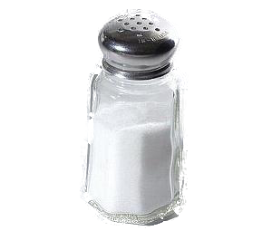

PASTA

BUTTER
2 SPOONS

MILK
1 CUP
PASTA
100 gms

SALT
1/2 SPPON
BASIL
1/4 SPOON

ONION
1 PIECE

FLOUR
2 SPOON

PEPPER
1/4 SPOON
- Step 1- Making white sauce
- Heat a saucepan. Keep the flame to a low and add 2 tablespoons butter. When the butter melts and starts to bubble, then add 1 tablespoon whole wheat flour or 2 tablespoons all-purpose flour.Using a wired whisk stir the flour quickly as soon as you add it. Keep on stirring so that no lumps are formed. The frequent stirring helps the flour to cook evenly. You will see the flour frothing and bubbling up while stirring. Sauté the flour till you get a nice cooked aroma from the flour and a pale golden color. Don't brown the flour.Keep the flame to the lowest and then pour 1 cup chilled milk in a gentle stream. Pour the milk with one hand and stir the sauce mixture with the other. The milk has to be chilled, so that lumps are not formed. If you use hot or warm milk or milk at room temperature, lumps can be formed.Do stir frequently while the milk warms and heats up.On a low flame, simmer the sauce till it thickens.When the sauce has thickened well and coats the back of a spoon, switch off the flame.Keep the saucepan down and add the seasonings - ¼ teaspoon black pepper powder, a generous pinch of nutmeg powder or grated nutmeg and salt as required. For a cheese sauce, you can add 2 tablespoons of grated cheddar cheeseMix very well and keep aside. Do note that on cooling white sauce will thicken more. So you can keep the consistency accordingly.
- Step 2- Cooking pasta
- Boil 4 cups water with ½ teaspoon salt in a pan. When the water comes to a boil, add 1 cup penne pasta. Cook the pasta on a medium to high flame. When the pasta gets done to an al dente texture, switch off the flame. For a softer texture, you can cook the pasta more if required. With a strainer spoon, strain the pasta.
- Step 3- Making white sauce pasta
- Then add them to the white sauce. Add ¼ teaspoon each of dried oregano, dried basil and dried thyme. You can add your choice of herbs. At this step you can even add some steamed or cooked or sauteed or roasted veggies. Mix very well. Serve white sauce pasta garnished with some fresh herbs like parsley, chives or dill. You can also garnish with some grated cheddar cheese.